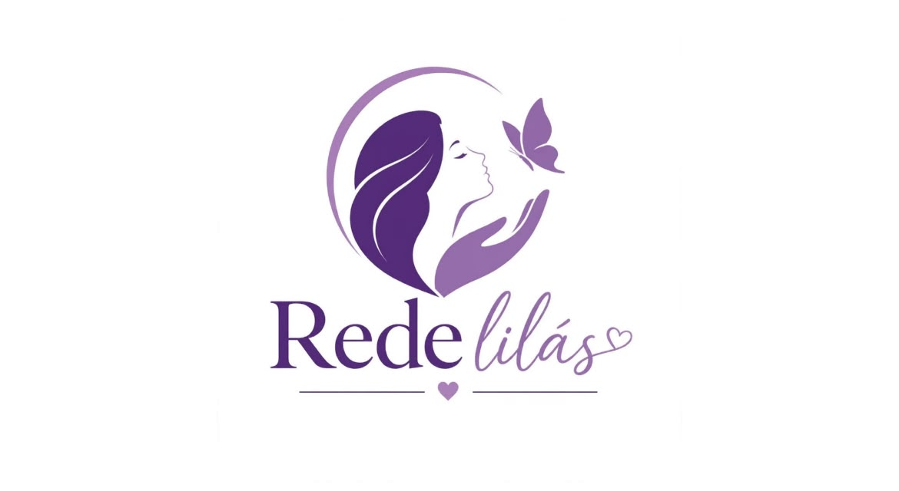

Informação, acolhimento e denúncia
Não é só agressão.
É sobre vidas.
A agressão contra a mulher não começa com um tapa. Ela começa com o controle, com o silêncio imposto, com o medo de ser quem se é. Este espaço foi criado para romper esse silêncio.
Se você está passando por isso, a culpa nunca é sua. E você não está sozinha.

Reconheça os sinais da violência e entenda o que a lei garante a você.
Conheça seus direitos →Histórias reais de dor, coragem e superação, para que nenhuma mulher se sinta só.
Ler as histórias →Telefones, delegacias e caminhos para pedir proteção com segurança.
Encontrar ajuda →Reconheça os sinais
A violência tem mais de uma forma.
A Lei Maria da Penha protege mulheres contra a violência doméstica e familiar. Ela pode ser física, psicológica, sexual, patrimonial ou moral, e quase nunca começa com agressão no corpo.
Qualquer conduta que ofenda o corpo ou a saúde da mulher.
Ameaças, humilhações, controle e isolamento.
Qualquer contato ou relação sexual sem consentimento.
Reter documentos, dinheiro ou objetos que são seus.
Calúnia, difamação e injúria.
Medida protetiva de urgência
É o prazo em que o juiz pode decidir afastar o agressor de casa e proibir que ele se aproxime de você.
Mural de histórias
Por trás de cada caso, existe uma vida.
Relatos verdadeiros de quem precisou se calar e encontrou força para continuar.


Campanhas de conscientização
.jpg)

Encontre ajuda perto de você
Delegacias mais próximas, a um toque.
Ao permitir a localização do aparelho, a busca abre no mapa já centrada onde você está. Se preferir não permitir, use a busca direta no Google Maps.
Seus contatos de apoio
Guarde os telefones de quem pode ajudar. A lista fica salva só neste aparelho.
Cadastre seu perfil
Receba orientações e novidades da Rede Lilás. Informe só o que quiser.
Perfil cadastrado.